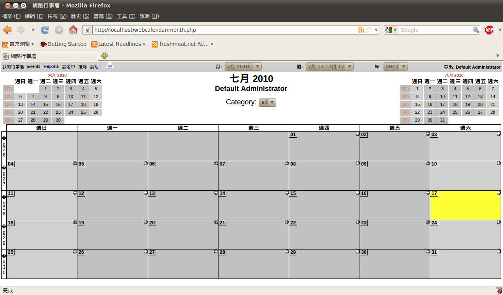
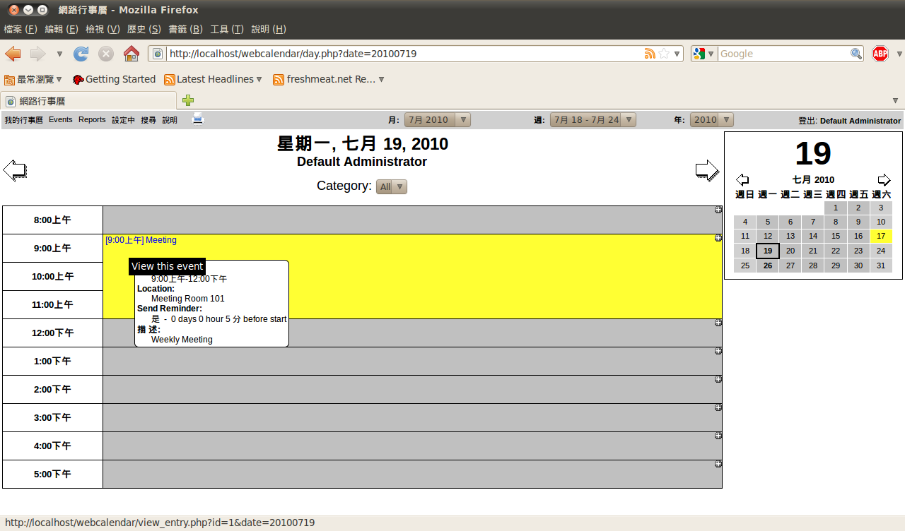
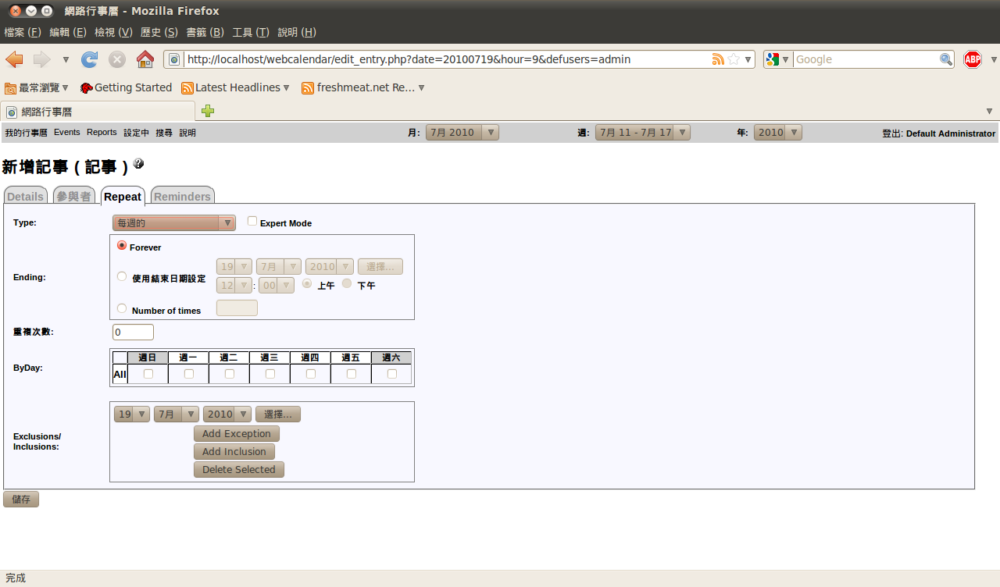
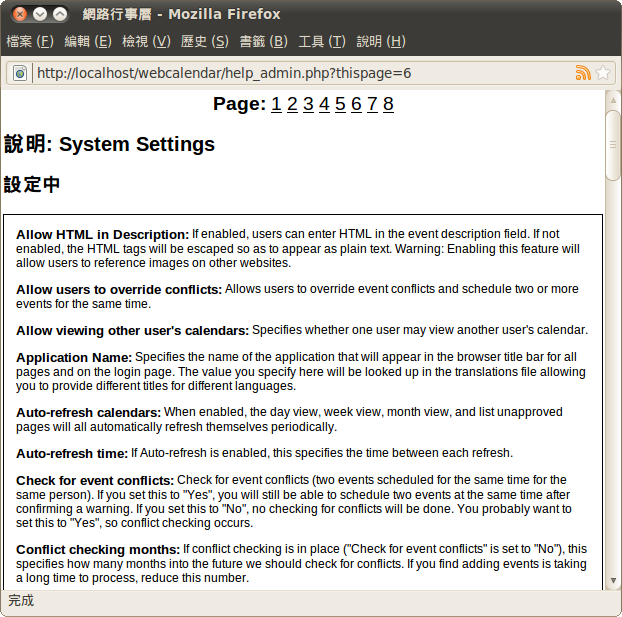
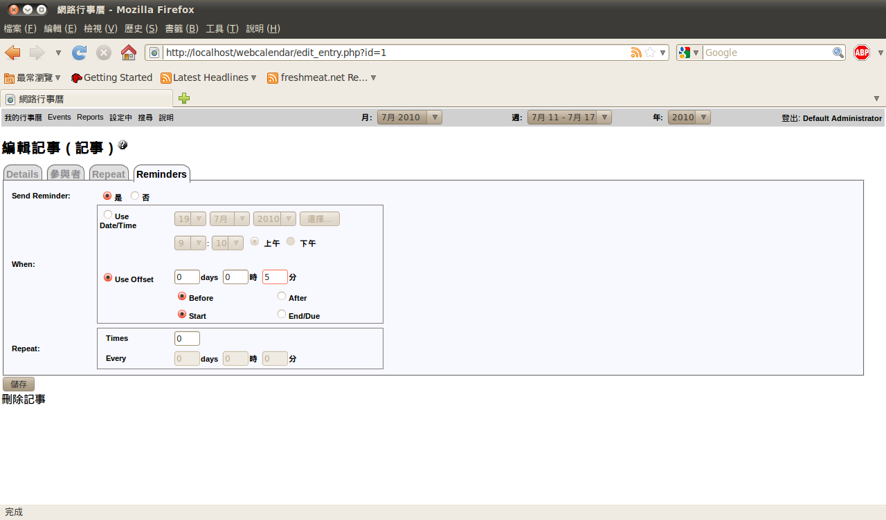
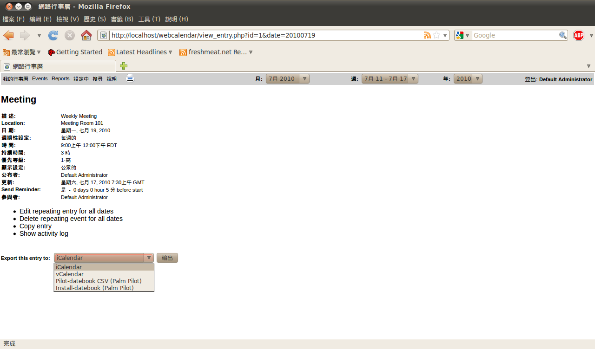

適合所有人使用的行程管理系統 - WebCalendar

官方網站：https://www.k5n.us/webcalendar.php
下載網址：https://downloads.sourceforge.net/project/webcalendar/webcalendar%201.2/1.2.1/WebCalendar-1.2.1.tar.gz?use_mirror=ncu&ts=1279353435 (1.5MB)
註：Ubuntu Linux 下可使用「sudo apt-get install webcalendar」直接安裝。
簡介
現代人的生活越來越忙碌，自然也面對了更多需要處理的事情。為了避免忘了處理已經排定的行程，許多人會使用桌曆或是記事本，作為記錄待辦事項的提醒工具。而時下流行的智慧型手機也幾乎都會內建行事曆軟體，並且擁有為數不少的使用者。但手機內建的行事曆軟體終究只是個人使用的輔助工具，如果需要與他人共同分享自己的行程，或是在排定事件時可以先了解相關人員的行程安排，則無論是桌曆、記事本，或是手機，都無法達到這樣的目的。如果要滿足這樣的行程安排需求，或許可以考慮使用網路版本的行事曆軟體或系統，這樣可以利用網路易於存取與分享的特性，讓所有人（或是特定人員）都能查閱自己的行程安排。
本文所要介紹的 WebCalendar，是一套使用網頁介面，並使用 PHP 語言開發而成的網路行事曆系統。WebCalendar 可以作為個人的行事曆系統使用，也能設定為多人共同使用的行程安排系統，或是作為公開的行程安排佈告欄，在使用上並沒有特別的限制。而在搭配的後端資料庫系統方面，WebCalendar 支援許多 UNIX/Linux 系統上常見的資料庫系統，例如 MySQL、PostgreSQL、Oracle、DB2、Interbase 等等。此外，由於 WebCalendar 也能在 Windows 系統上執行，因此如果有需要的話，亦可利用 MS SQL Server 並搭配 ODBC 使用。

▲ WebCalendar 的操作畫面
多功能的行程管理系統
WebCalendar 本身是一套相當多元化的網路行事曆系統，並可依據其環境設定的不同而有不一樣的應用架構。例如最單純的使用方式，便是將 WebCalendar 設定成個人使用的行事曆系統。由於此時行事曆的存取權限需要輸入帳號、密碼等資訊才能取得，因此不需要擔心會有個人行程外洩的問題發生。如果要在公司行號或是組織之中使用 WebCalendar 作為行事曆系統，則可以將 WebCalendar 設定為允許多人使用的群組模式。在此種作業模式之下，還可以指定一個以上的助理，並協助特定使用者進行行程管理。另一種使用模式則是完全公開化，將 WebCalendar 視為公開的行程公告網站使用。此時不但所有人都能在網路上查詢到所有事件的規劃行程，甚至還能允許訪客進行新行程的建立。這樣的公開使用方式自然有利有弊，如何取捨則看個人或是團體的使用考量而定。
WebCalendar 也可以設定成行事曆伺服器，並允許大多數的 iCalendar 相容程式進行存取，例如 Mozilla Sunbird、蘋果電腦的 iCal，或是 GNOME 桌面管理程式所內建的 Evolution 等等。如果應用程式有 RSS 讀取功能，也能與 WebCalendar 搭配使用並檢視行事曆的內容。例如 Firefox、Thunderbird 等支援 RSS 讀取功能的應用程式，都可以作為 WebCalendar 存取程式的選擇之一。
WebCalendar 的特色
許多開放原始碼的軟體或是系統都是由外國人所開發，因此不支援多國語系，或是僅支援西歐語系的情況相當常見。但也有不少軟體在開發之初便已經考慮到非英語系國家的使用問題，因此在多國語系的支援方面也會提供較為完善的支援。WebCalendar 在多國語系方面明顯下過一番苦工，支援了大約三十種不同的語言，包含正體中文在內（使用 Big-5 編碼）。由於支援的語言數量相當多，因此即使應用在跨國企業、或是可能會有使用不同語言的訪客前來使用的情況，對於 WebCalendar 而言也不成問題。但較為可惜的是，雖然 WebCalendar 支援正體中文語系，但有為數不少的訊息並未被完整翻譯，因此在操作時經常會看到中英文夾雜的狀況，在語言轉換上稍嫌不便。當然如有需要，系統管理員也可以自行翻譯語系檔，以便將所有訊息中文化，造福對英文有恐懼感的使用者。
在使用 WebCalendar 時，使用者並不需要自行指定系統所使用的語言，因為 WebCalendar 會自動從使用者所使用的瀏覽器進行偵測與判斷，以決定系統所使用的語言。但由於自動偵測並不能保證百分之百正確，因此 WebCalendar 也保留了手動設定語系的功能，可以在讓使用者在系統自動判斷錯誤時進行修正。
允許管理員能將系統設定為多人使用環境的 WebCalendar，自然也支援使用者認證的功能，以確保系統所存放的個人行程資料不會被他人竊取。WebCalendar 支援的使用者認證方式包括網頁對話模式的密碼認證功能，亦支援 HTTP 或是 LDAP 等常見的相關通訊協定。如果系統本身有啟用 NIS 服務，亦可作為使用者身份的認證功能使用。
以網頁方式呈現的 WebCalendar，本身相容於 XTHML 標準，也可以使用 CSS 進行頁面的排版設定。也因為支援 CSS 語法，因此 WebCalendar 也能採用佈景主題的方式修改畫面呈現的方式。系統本身有內建數套不同風格的佈景主題，如果系統管理員熟悉 CSS 語法，自然也能自行建立新的佈景主題。
一般而言行事曆會以全年度、月份、一週，或是日期等不同的時間長度表示方式呈現，WebCalendar 也採用了相同的觀念。在進入系統時預設會以月份的方式顯示行事曆的內容，但只要點選特定的日期，即可切換至以一天為單位的顯示模式，讓使用者可以直接查詢該日期所有預定的行程，或是進行新增、修改等行事曆的編輯動作。切換至年份、星期等不同的顯示模式也是類似的操作方法，在使用上相當直覺而便利。

▲ WebCalendar 可以使用不同時間長度的檢視畫面
WebCalendar 可以設定成多人使用的行事曆系統，因此使用者管理的相關功能也是系統管理功能的一部份。在系統管理畫面中，除了可以針對使用者帳號進行新增、編輯或刪除等基本操作以外，也可以進行事件的編輯或刪除動作。除了管理方面的功能以外，WebCalendar 也提供了檢視他人行事曆的支援功能，讓主管可以得知下屬目前的行程安排，或是提供助理代為安排主管行程的參考依據。除了可以檢視他人的行程以外，使用者也能在自己的行事曆上面直接以階層的方式顯示其他人的行程，因此可以很明確的看出自己與他人在特定時間點的行程是否有衝突，並決定是否需要變更原定計畫的執行時間。
使用 WebCalendar 建立事件或行程時，除了可以使用單一事件的方式以外，也能將事件設定為重覆行程，並定義該事件要多久重覆一次。例如每星期一早上固定會舉行產品進度週會，即可將此事件設定成每週一早上重覆的事件。重覆事件設定後並不代表只能按照原先設定持續進行，如果需要針對重覆事件中的特定一、二個時間點進行修改，也能直接進行編輯或是刪除。以方才的週會事件為例，如果下星期一因為主管出國而無法舉行會議，即可在 WebCalendar 之中將下星期一的週會行程刪除，但仍然保有之後的重覆設定。

▲ WebCalendar 亦提供重覆事件功能
設定事件時，使用者亦可利用自定行程欄位的功能進行特殊欄位的設定。這表示 WebCalendar 允許使用者以較有彈性的方式進行事件的設定或編輯，而不必牽就於系統現有的欄位設定。此外，以往在排定行程時如果沒有事先查詢，很可能會因為該時間點已經有既定行程而與新行程產生衝突現象。但在使用 WebCalendar 的情況下這樣的問題並不會產生，因為 WebCalendar 有自動檢查衝突事件的機制，在設定事件時若與既有行程產生衝突，便會立即告知使用者，以便進行後續調整並避免產生衝突事件。
除了事件設定可以使用自定欄位以外，在系統的偏好設定方面 WebCalendar 也有許多可以讓使用者自行選擇的設定或選項。例如時間採用的格式是 12 小時制或 24 小時制、每週開始的日期是星期日或是星期一，還有顏色的設定等各種不同的設定。此外，如果在使用 WebCalendar 時對於操作功能方面有任何不清楚的地方，亦可隨時使用線上輔助功能進行查詢，以便找到相關功能的解說。線上輔助功能所提供的文件相當完善，基本上已經是一套完整的電子版操作手冊。即使沒有在使用 WebCalendar 時遇到任何問題，亦可開啟此說明文件加以閱讀，以便了解更多關於 WebCalendar 的操作細節。

▲ 線上說明文件相當完整
而在設定的事件時間點即將到來的時候，WebCalendar 也會主動發出提醒訊息，以便讓相關人員可以注意到此事件的來臨，並採取適當的對應動作。WebCalendar 主要是利用電子郵件作為提醒訊息的傳送管道，而且除了可以作為即將發生事件的提醒訊息使用以外，亦可作為提示功能使用。在有人針對事件進行新增、更新，甚至是刪除動作時，都會主動發送電子郵件，以便提早發現不尋常的事件處理過程，並加以進行處理以便避免發生事件遭人任意變更的情況發生。

▲ 可以要求 WebCalendar 在事件發生時間接近時，先傳送電子郵件提醒相關人員。
由於行事曆管理軟體有相當多元化的選擇，大多數人多半都已經有採用相關軟體的經驗，所以如果想要從原先的軟體平台轉換至 WebCalendar，勢必要面臨資料轉換的工作。但這一點對於 WebCalendar 的使用者而言並不會太困難，因為 WebCalendar 本身提供了相當完善的資料匯入匯出功能，可以讓使用者將其他行事曆軟體的事件匯入 WebCalendar，或是在有必要的情況下，將 WebCalendar 的資料匯出至其他行事曆軟體。目前 WebCalendar 主要支援的匯入、匯出格式為 iCalendar 相容的資料格式，例如 Mac OS 上的 iCal、Mozilla Calendar 或 Sunbird 等軟體都是較為著名的 iCalendar 相容軟體。

▲ 資料匯入與匯出功能支援 iCalendar 相容的軟體所產生的檔案格式
結語
行程管理對於現代人而言一點都不陌生，許多人也都有使用相關軟體的經驗，WebCalendar 只是其中一種選擇，至於是否合用，能否取代自己原先所使用的行事曆軟體，則不免見仁見智。有些人願意嘗試各種新軟體，有些人則是使用了某一套軟體之後，便會因為已經習慣其操作介面而不願意輕易更換。這些選擇都是合理的作法，並沒有是非對錯之分。只是如果願意多嘗試一些新軟體，或許還有機會發現更多方便好用的軟體，最後也有可能將原先慣用的軟體棄之一旁也說不定。
至於 WebCalendar 是否適合所有人，這個問題事實上只有在實際使用之後才能得到解答。但這並不代表所有人都需要先行安裝 WebCalendar 才能了解 WebCalendar 的優缺點，因為 WebCalendar 的官方網站早已架設一套展示用的平台，相當適合尚未採用 WebCalendar，但又對 WebCalendar 有興趣的人先行試用。此展示站台的網址為 https://webcalendar.sourceforge.net/demo/login.php ，帳號與密碼都使用「demo」即可登入使用。